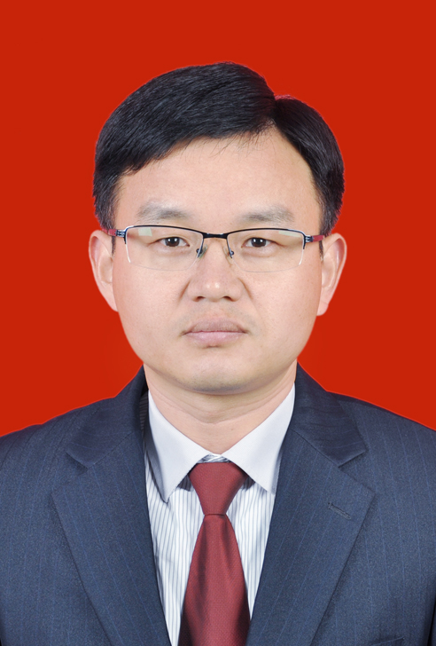
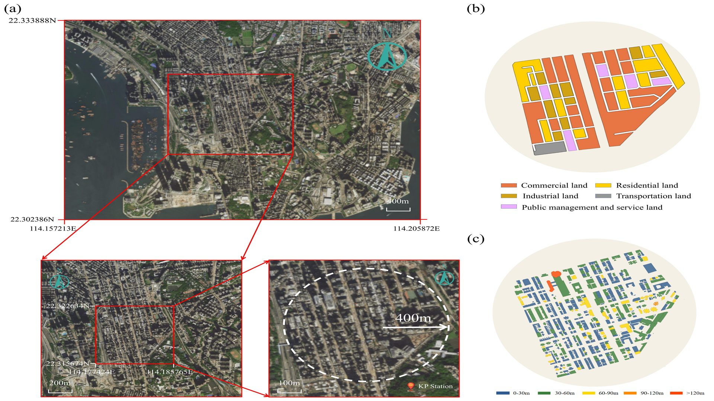

课题组负责人 · Group Leader
赖元文 教授 · 博士生导师
福州大学土木工程学院院长助理、交通工程系系主任。主要从事交通规划、交通运营与管理、智慧交通等领域的教学与科研工作。
查看官方主页
TPM课题组聚焦交通规划与管理领域，致力于将前沿理论、数据分析与工程实践相结合，探索更高效、更绿色、更智能的交通系统。
课题组鼓励开放讨论、交叉协作与面向真实问题的研究，让每一项成果都经得起学术检验，也能回应现实需求。
课题组导师团队围绕交通规划与管理开展教学科研工作，在公共交通、自动驾驶、道路安全与交通基础设施等方向形成互补。

课题组负责人 · Group Leader
福州大学土木工程学院院长助理、交通工程系系主任。主要从事交通规划、交通运营与管理、智慧交通等领域的教学与科研工作。
查看官方主页我们从理论建模走向系统实践，以多学科方法探索交通系统的演进路径。
面向城市与区域交通系统，研究需求分析、网络优化、空间配置与规划决策方法。
聚焦公交系统的组织、调度与服务优化，提升公共交通的效率、韧性与吸引力。
解析新能源车辆的能耗机理与使用特征，为低碳交通政策和基础设施配置提供依据。
研究车、路、云协同环境下的信息交互与决策控制，支撑安全高效的智能交通系统。
这里记录课题组毕业生的成长轨迹与发展去向。

中南大学攻读博士学位
导师：田红旗院士
交通科技 / 规划设计企业
政府 / 事业单位
论文发表、学术交流与课题组生活都可以在这里持续更新。
Join us
欢迎对交通规划、公共交通、新能源汽车与车路协同感兴趣的同学联系课题组。